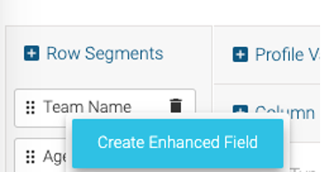
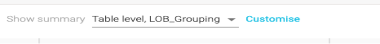

LAB 3
README
In this lab, we will create a custom report to monitor the calls waiting in the queue in real-time, along with the available agents and their respective states. Since the option to create a custom report is currently unavailable in the New Analyzer UX, we will be using our current Analyzer interface for this lab.
In Webex Contact Center, there are four primary data repositories that store critical customer and agent-related information. These repositories are structured as follows:
1_customer_activity_record
- This type of record represents individual, atomic steps within the customer's workflow.
- It captures key moments in the customer journey, providing insights into their interactions with the contact center.
- Customer in IVR or queue, talking to an agent, or on hold.
- Customer on specific web pages, such as the home page, product page, or checkout page.
2_customer_session_record
- Customer Session Records are more comprehensive, encapsulating the entire customer workflow.
- They consist of a sequence of customer activities, providing a holistic view of the customer's engagement with the contact center.
- Customer calls the contact center for assistance.
- Customer visits a website and explores its content.
- Customer interacts with the website and engages in a chat with an agent.
- Customer initiates contact by sending an email, and an agent responds.
3_agent_activity_record
- This record type focuses on individual actions within the agent's workflow.
- It logs every significant step an agent takes, shedding light on their interactions and status throughout their workday.
- Agent's status transitions, such as idle, available, talking, or wrapping up.
- Agent's offline activities, including dialing, note-taking, and reading emails.
- Agent's involvement in chats with customers and the subsequent wrap-up process.
4_agent_session_record
- Agent Session Records provide a comprehensive overview of an agent's work.
- They encompass a sequence of agent activities, offering insights into the agent's handling of tasks and interactions.
- An agent manages a service call, logging an incident or request.
- An agent initiates an outbound call and schedules a meeting for a customer.
- An agent engages in chat interactions with customers, providing answers and assistance.
- An agent reads and responds to customer emails, ensuring effective communication.
These data repositories play a crucial role in capturing, organizing, and analysing the wealth of information generated within the Webex Contact Center, ultimately supporting informed decision-making and enhancing customer and agent experiences.
{kind=link}
Before you continue with this exercise follow below:
1.Login to agent desktop with your respective agent credentials and update agent status to Meeting

2.Make a Call to the respective Entrypoint DN assigned to you. You will be prompted to enter your 3-digit attendee ID (for Eg. If your attendee ID is 77, then enter 077) options to get to an agent,
3.With no agent available you would hear a wait music. (If this is not working, please reach out to the lab instructor)
3.1 Create Custom Realtime Agent Report
In this Lab, we will create a custom visualization to showcase the state of agents on a Realtime basis.
Objective: Create an Agent Real-time state report with following data insights:
1.State of Agents on real-time basis for Telephony channel. 2.Capture key metrics:
- Agent Team
- Agent Name
- Agent State
- Idle Code
- Total number of agents logged-in
- Number of Agents in Available and idle state for each team
-
Duration in the State
-
Create a high-level view, based on line of business (Group or Teams).
- Have Data summarized based on each Line of Business (LOB).
- Have options to filter the data based on LOB and Idle code.
- Create some visual indication when certain agents in Idle state for long duration.
While completing this Exercise, you will be able to understand and use some key capabilities like:
- Fields and Measures
- Enhanced Fields
- Formulas
- Drill-down
- Group Summary
- On the Fly-filter
- Filtering
1.Create a new visualization in Analyzer as an Agent Activity Record.
- Set Start Time as
Realtime. - Set Duration as
None (Snapshot). - Refresh duration as
5 Seconds.
{kind=link}
{kind=link}
2.Next, we will begin adding variables to the visualization. Click on Row Segment and add:
- Team Name
- Agent Name
- Activity State
- Idle Code Name
{kind=link}
{kind=link}
3.Next, click on Profile Variables and add Agent Session ID (Count) and rename the name as #Total. Click Save
{kind=link}
4.To capture Available Agent Count add Agent Session ID. Name it as #Available. Also, Drag Activity State as Filter with value available.
5.Repeat step 4 to add Idle Agent Count, this time with filter value idle. Name it as #Idle.
{kind=link}

6.Next, we need to capture the State Duration. We will achieve this by using a formula to subtract the activity start time from current time, which will give us the activity duration.
- Search for Measure Profile variable
Activity Start Timestamp. - Under formula, select
Minimum Activity Start Timestampand save it.

- Right click on the field and click New Formula After, right click on the created field and click on
New Formula.
- Name it Duration and swap the fields by clicking .
- Click on the empty field and select
Current Timestamp. - Select
 Subtraction operator, as shown below. Click
Subtraction operator, as shown below. Click Save
 .
. - Right click the
Durationprofile variable, and set the Duration Number Format asDuration > MM:SS.
 .
. - Hide
Minimum Activity Start Timestampby clicking on the eye icon.
.
{kind=link}
{kind=link}
{kind=link}
{kind=link}
7.Re-order the variables by dragging and dropping the variables in the order that you wish to see them in the report.

8.Save the report as 3.1_AAR_RT_AgentState_<YourStudentID> (e.g. 3.1_AAR_RT_AgentState_101) in your folder and click Preview.
{kind=link}
9.Notice that the #Total count for each agent is “16”.
- This is because each agent is a multi-channel agent (with Total 16 channels, 1 voice, and 5 Chat, 5 Email, 5 Social).
- In this case we want to capture data for
Telephonychannel only so let’s add a Channel Filter for Telephony. - Go Back to the report edit mode and Add Filter with Channel Type as Telephony.

10.Save the visualization and click on Preview to run it again.
{kind=link}
3.2 [Bonus] LOB Grouping
1.To create a LOB group
-
Right click on the Team name and then
Create Enhanced Field.  -
Name the Field LOB_Grouping{{StudentID}}, replacing {{StudentID}} with your provided ID.
-
Add 2 groups containing the following teams:
- CL_G1x : Seach for “Team1” Select from 101_Team1 to 132_Team1
- CL_G2x : Seach for “Team2” Select from 101_Team2 to 132_Team2
{kind=link}
{kind=link}
- Save it.

-
Make this Enhanced Field global so it can be used for any other visualizations with need of creating it again.
-
Right click LOB_Grouping{{StudentID}} --> Click Save --> When prompted, click Save again.


- Field is now saved and can be used in any other report.
- Move LOB_Grouping{{StudentID}} as top row segment.

2.To create a Summary at LOB level:
-
Click
Customize--> Go to LOB_Grouping level.  -
Select
SUMfor #Total, #Idle, #Avaliable --> Save it.
{kind=link}
{kind=link}
3.Lastly, add the on-the fly filters for the LOB Grouping and Idle Code Name.
- Click on
Show Filter On Run Mode.

- Select LOB_Grouping and Idle Code Name.
{kind=link}
4.Save the visualization and check the Preview.

Congratulations, you have completed this lab! You can continue with the next one.